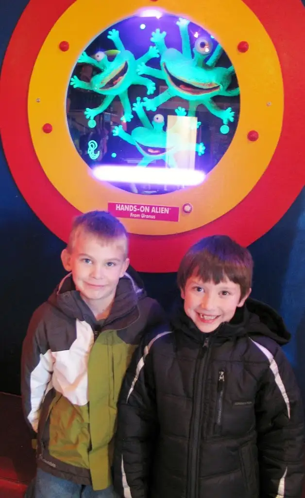

Over the years, we’ve experienced a few alien abductions here. Particularly during winter-time birthdays when the thought of in-house gatherings for a bunch of boys borders on insanity.
{kind=link}
The first year was the year Space Aliens Restaurant opened up in Fargo. Our middle son, Adam, was still only a thought in the mind of God. His older brother was in kindergarten, just turning six, and was among the first group of kids to meet the infamous house alien.
{kind=link}
Back then, alien headbands were included in the party package.
{kind=link}
About five years ago, Daddy Troy chose abduction over insanity for his birthday, and the little boys couldn’t have been more thrilled. Tickets in the game room = cheap prizes that never fail to delight.
{kind=link}
This year, Adam experienced his first birthday-party abduction. With Thanksgiving bumping into birthday, we had to jumpstart the partying.
The aliens were still imprisoned but smiling.
 |
| Adam (r) and pal (l) |
{kind=link}
The game room and its gadgets did not disappoint.
{kind=link}
{kind=link}
The cupcakes were intoxicatingly yummy.
{kind=link}
{kind=link}
Best of all? No mess to clean up at home! (Okay, that perk’s mainly for Mama Roxane).
{kind=link}
(Love it when teen sisters have their own agenda and won’t cooperate for the obligatory end-of-party photo…)
{kind=link}
*Sigh…
They were right when they said it goes fast. It really, really does.
Happy Birthday Week, Adam! You are truly out of this world!